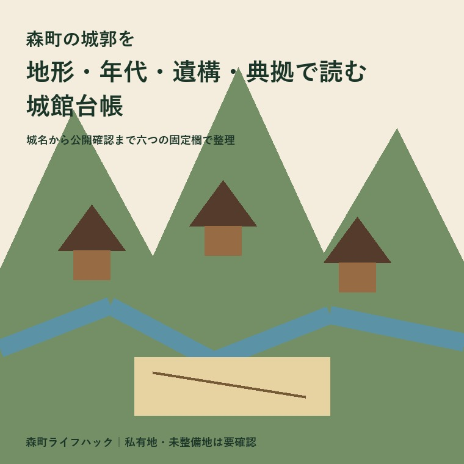
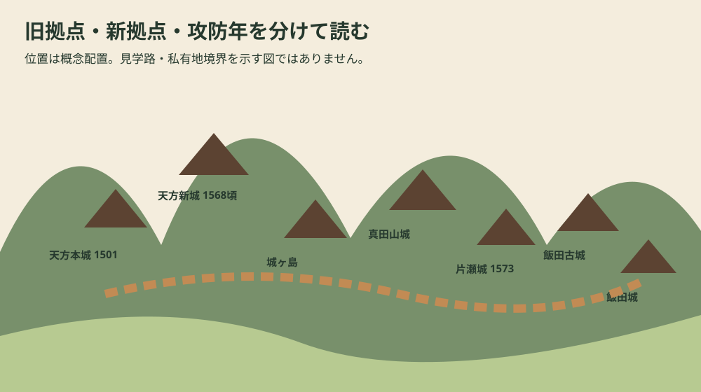
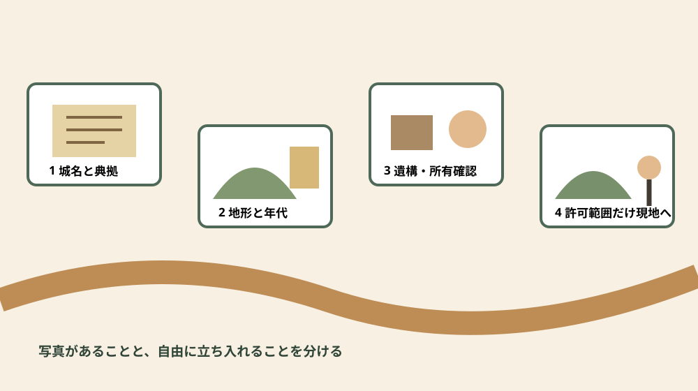

歴史・城郭・資料整理
森町の城郭を地形・年代・遺構・典拠で読む城館台帳

この記事の要点
Q. 森町の城跡を混同せずに記録するには？
A. 城名、立地、時期、遺構・出土、典拠、公開確認を六つの固定欄に分けます。写真があることと、現地へ自由に入れることも分けてください。
導入——攻略順ではなく、城館ごとの資料台帳を作る
森町公式の「17 森町の城郭」を読むと、天方本城、天方新城、飯田城、一宮城などが短い期間に次々と登場します。人名と年号だけを追うと、同名・別名や旧拠点・新拠点の関係を見失います。本稿は城跡巡りのコースではなく、一城ずつ根拠を戻せる城館台帳です。
既存ブログ全件を「城郭」「城跡」「天方城」「飯田城」「真田城」で再検索したところ、城郭を専題にした記事はありませんでした。天宮神社の樹木記事に地名上の言及があるだけで、城館の年代・地形・典拠を台帳化した記事とは重なりません。
主資料は町公式「17 森町の城郭」です。1501年から1573年までの攻防と、城ヶ島、天方新城、天方本城、真田山城、飯田古城、飯田城、片瀬城の写真・模型解説を掲載しています。
もう一つは2026年に認定された森町文化財保存活用地域計画です。町公式ページは、7月17日の文化審議会文化財分科会の答申を受け文化庁長官により認定されたこと、文化財保護法第183条の3に基づく法定計画であること、計画本文を公開していることを案内します。
「図説森町史」は平成11年2月発行時の情報を用いており、最新状況と異なる場合があります。遠景写真や所在地の括弧書きは、公開施設、登山道、駐車場、立入許可を意味しません。この前提を各カードの最後に繰り返します。
公式資料から直接確認できる十五の事実
事実1。森町の山城をめぐる戦いについて、町史は1501年、文亀元年の天方本城の戦いから説明を始めます。場所は大鳥居です。
事実2。天方本城を守ったのは今川方の天方通季軍、攻めたのは斯波・小笠原連合軍でした。通季は一時城を奪われ、付近の山上へ避難し、今川軍本隊の応援で奪還しました。
事実3。通季の孫、天方通興は徳川家康軍の遠江侵攻を予想し、1568年ごろ向天方に天方新城を築きました。町史はこれを現在の天方城と呼ばれる城と説明します。
事実4。1569年6月、徳川軍は天方新城を攻め、通興を降伏させました。続いて飯田城の山内通泰軍を攻め、滅ぼしたと記されます。
事実5。通泰の庶子伊織は、家臣梅村彦兵衛に伴われ三河へ落ち延びました。落城後の人物移動まで町史本文に残ります。
事実6。1572年、元亀3年には武田信玄軍が北から遠江へ侵攻しました。信玄は天方新城に部下の久野弾正を入れ、飯田城も攻略しました。
事実7。武田軍はさらに南下して東海道へ出て、磐田原台地を北上し、二俣城を落とした後、三方ヶ原で徳川軍を破りました。森町の城だけで完結せず、広域の進軍線に置かれます。
事実8。家康は1573年3月、武田軍に攻略された天方城と各和城などを奪還し、一宮城と向笠城を攻めました。
事実9。一宮城を守った武藤氏定は亀ノ甲、現在の掛川市へ逃れました。向笠城は一戦も交えず敗れたと町史は記します。
事実10。1573年6月、徳川軍は一宮城と社山城に防御柵を築き、二俣城の押さえとして浜松城へ帰陣しました。占領後の城の役割が示されています。
事実11。城ヶ島の城跡は森町鍛冶島の栗之島にあり、山内氏が大鳥居へ進出する以前の拠城と説明されます。
事実12。真田山城は真田城とも呼ばれ、森町一宮の宮代にあります。武藤氏が片瀬城を築く以前の拠城です。
事実13。飯田古城は森町飯田の中飯田にあり、山内氏が飯田へ進出して初めて築いた城です。崇信寺の寺域とほぼ重なるとされます。
事実14。現在飯田城と呼ばれる城も中飯田にあり、町史の写真解説は「通泰築城か」と疑問を残した表現を用います。確定事項として書き換えてはいけません。
事実15。片瀬城は一宮城とも呼ばれ、町公式ページには森町一宮片瀬の城を再現した模型写真が掲載されています。現地遺構の写真と模型を区別する必要があります。

城館台帳——六つの固定欄で七城を読む
カード1・城ヶ島の城跡。城名は城ヶ島。立地は鍛冶島・栗之島。時期は山内氏が大鳥居へ進出する以前ですが、絶対年代は町公式解説にありません。遺構・出土は「城跡」の写真のみで具体記載なし。典拠は図説森町史802ページ。公開確認は未記載で、自由立入りとは判断しません。
カード2・天方本城。城名は天方本城。立地は大鳥居・本城山。時期は少なくとも1501年の攻防が確認されます。遺構・出土は遠景写真があるものの、曲輪、堀切、土塁、出土品の個別解説はありません。典拠は町史本文と写真解説。道や所有者、整備状態は事前確認が必要です。
カード3・天方新城。現在の呼称は天方城、史料上の呼称は天方新城。立地は向天方。時期は1568年ごろ築城、1569年徳川方へ降伏、1572年武田方、1573年徳川方へ推移します。所属は今川、徳川、武田、徳川。遺構・出土の詳細と公開条件は町公式ページだけでは確定できません。
カード4・真田山城。別名は真田城。立地は一宮・宮代。時期は武藤氏が片瀬城を築く以前で、絶対年代は解説にありません。旧拠点から新拠点への順序は分かります。写真は外観で、遺構名や出土品の記載は未確認。見学路の案内とも区別します。
カード5・片瀬城。別名は一宮城。立地は一宮・片瀬。1573年に徳川軍が攻め、守将武藤氏定が逃れ、同年6月に防御柵が築かれました。ページ掲載物は京都科学提供の復元模型写真です。模型で表された構造と、現地に残る遺構を混同しません。公開条件も別途確認します。
カード6・飯田古城。立地は飯田・中飯田で、崇信寺寺域とほぼ重なります。時期は山内氏が飯田へ進出して最初に築いた段階。遺構・出土は町公式解説に具体記載がありません。寺域であることは、参拝可能範囲の外へ自由に入れることを意味しません。
カード7・飯田城。立地は同じ中飯田。時期は1569年に徳川軍の攻撃を受け、1572年に武田軍が攻略しました。「通泰築城か」という典拠の留保をそのまま残します。遺構・出土、所有区分、公開経路は未確認です。
七カードを並べると、城名と所在地だけでなく、旧拠点から新拠点への移動、城主の所属変化、写真と模型の資料種別、確定年と相対年代の違いが見えます。分からない欄を「なし」で埋めないことが台帳の要点です。
地形をどう読むか——山上、尾根、谷、平地の連絡
町史は森町の「山城」をめぐる戦いと呼び、天方本城では通季が付近の山上へ避難したと記します。天方新城、一宮城、飯田城を単なる点として見るより、北から南へ軍が動く通路と周辺の尾根を合わせて考える必要があります。
ただし遠景写真から標高、比高、斜面勾配を目測で断定しません。国土地理院地図や現地測量、発掘・縄張調査の報告を追加し、町史の所在地と照合して初めて地形欄を詳しくできます。
飯田古城と崇信寺寺域が重なるという記述は、城が廃された後の土地利用を考える手掛かりです。しかし寺の建物や墓地の全てを城郭遺構とみなすことはできません。時代層を分けます。
年代をどう読むか——確定年、推定年、前後関係
1501年の攻防、1569年の落城、1572年の武田侵攻、1573年の徳川反攻は年が明記されます。一方、天方新城の築城は1568年「ごろ」、飯田城の築城者は「通泰築城か」です。語尾も典拠情報です。
城ヶ島、真田山城、飯田古城は「以前」「初めて」という相対年代で整理できます。無理に西暦へ変えず、どの拠点より前かを矢印で記録する方が正確です。
遺構・出土欄を空白のまま守る
城郭記事では曲輪、土塁、堀切、竪堀、井戸といった語を並べたくなります。しかし指定ページの個別解説にないものを、一般的な山城知識から各城へ割り当てることはできません。
出土品も同様です。陶磁器、武器、瓦が一般に城跡から出ることがあっても、森町の各城で何が出たかは発掘報告へ戻る必要があります。本台帳では「町公式802ページに具体記載なし」と書くこと自体を成果にします。
認定地域計画を典拠管理に使う
森町文化財保存活用地域計画は、指定・未指定を含む地域の歴史文化資産を把握し、保存と活用を総合的に進める法定計画です。2026年7月17日の答申を受けて認定され、町公式6915ページから計画本文へ進めます。
認定されたことは、個々の城跡がすべて整備済み、公開済み、町有地になったという意味ではありません。城館カードには計画本文の掲載頁、指定区分、所有・管理、公開条件を別欄で追加する必要があります。
計画の価値は、古い図説を否定するのでなく、現在の資産把握、担い手、保存活用の方向を重ねられる点です。1999年時点の図説、2019年更新のウェブ解説、2026年認定計画という三つの時点を記録します。
典拠欄には「町公式」とだけ書かず、資料名、頁またはURL、資料の基準時点、ウェブ更新日、自分の確認日を残します。同じ町公式でも、図説の歴史記述と認定計画の現況整理では役割が違います。後日内容が更新されたとき、どの版を前提にカードを作ったか追跡できます。
公開確認欄も一語の「可・不可」で終えません。眺望地点から遠景を見られるのか、城域内に公開道があるのか、案内会だけ入れるのか、所有者の個別許可が必要なのかを分けます。未確認なら未確認のままにし、写真の撮影地点を来訪者向け入口だと推定しないことが保存への配慮になります。
良い点
攻防図と個別写真を往復できることが、第一の良さです。
町公式ページは1501年から1573年の攻防図と、七つの個別写真・模型を同じページに置きます。広域の軍事行動と一つの城の来歴を往復でき、城名の取り違えを減らせます。
旧城と新城、別名、所在地が短く明示されるのも利点です。天方本城と天方新城、飯田古城と飯田城、真田山城と片瀬城を同じものとして扱わずに済みます。
注文したい点
今後、各城について縄張図、調査年、遺構一覧、出土品、現況写真、典拠文献が追加されれば、町史の入口がさらに生きます。推定復元と現存遺構は表示を分ける必要があります。
公開情報には、見学可能範囲、私有地境界、危険箇所、駐車、道の有無、草刈り時期、問い合わせ先が要ります。所在地を詳しく公開しない方が保存に適する場所もあり得るため、所有者と保存を優先します。

対案・結論
最初の列は名称です。現在呼称、史料上の名称、別名を分けます。天方城と天方新城、一宮城と片瀬城、真田城と真田山城の対応を一行で確認できるようにします。
次の列は地形と所在地です。地区、大字、山名、寺域との重なりを書きます。緯度経度は出典がある場合だけ記し、私有地の詳細位置を無用に拡散しません。
時期列は、築城、攻防、改修、廃城を分け、「ごろ」「か」「以前」を残します。遺構・出土列は調査報告名と頁が確認できるまで未確認とします。
最後に典拠と公開確認日を置きます。URL、資料名、更新日、確認日、所有者照会、道の状態を別欄にすれば、歴史的事実と訪問可否が混ざりません。
家族に残す土地の記録
実家や山林が城跡に近い場合、言い伝えだけで対象筆を決めません。地番、名義、地目、境界、接道、現況、文化財担当への照会結果を保存し、城館台帳の位置情報とは分けます。
石積みや平坦面を見つけても、城の遺構と自己判断して動かさないことが大切です。撮影位置と日付を記録し、所有者と町の文化振興係へ相談します。
大石の視点
ここからは私、大石浩之の意見です。城跡に近いという言葉は魅力にも不安にもなりますが、売買価格や建築可否を自動的に決めません。まず対象地番、道路、境界、地目、農地、登記、文化財の照会を順に行います。
山城周辺では進入路、急斜面、倒木、排水、隣接所有者が維持費に関わります。眺望がよいという印象と、安全に継続管理できることは別です。平日と雨後にも現況を確認したいところです。
売却未定でも台帳は作れます。ふじがおか実家カルテの森町相談窓口では、城跡の由来を尊重しつつ、地番、名義、境界、道路を別々に整理する相談ができます。
よくある質問
この記事は城跡への行き方を案内しますか
しません。資料台帳であり、私有地や未整備地への立入りを勧めません。公開状況は所有者、管理者、町へ確認します。
森町の城郭攻防はいつ始まりますか
町史は1501年の天方本城をめぐる戦いから説明します。これは森町域の全城の築城開始年という意味ではありません。
天方新城は現在の天方城ですか
町史はそう説明し、1568年ごろ天方通興が向天方に築いたとします。天方本城とは別カードにします。
掲載城跡は自由に見学できますか
写真や所在地表記だけでは判断できません。公開道、駐車、所有、危険箇所を事前確認してください。
認定地域計画はいつ認定されましたか
町公式は、2026年7月17日の文化審議会文化財分科会の答申を受け、文化庁長官により認定されたと案内します。
まとめ
森町の城館は、1501年の天方本城から1573年の徳川反攻まで、今川、徳川、武田の攻防と結びつきます。しかし七城の年代精度、資料種別、遺構記載は同じではありません。
城名、立地、時期、遺構・出土、典拠、公開確認の六欄を守れば、遠景写真を現存遺構の全容と誤認せず、模型を現地写真と混同せず、推定を確定へ変えずに済みます。
今日できることは、気になる一城のカードを作り、空欄に「未確認」と書くことです。現地へ行く前に、典拠と所有・公開を確認する順番が、城跡と地域の双方を守ります。
参考にした公式情報
- 17 森町の城郭／静岡県森町（2026年8月17日確認）
- 森町文化財保存活用地域計画の認定について／静岡県森町（2026年8月17日確認）
- 森町文化財保存活用地域計画／静岡県森町（2026年8月17日確認）

最終確認日：2026-08-17 ／ 公表事実と執筆者の意見を分けています。見学・公開・所有状況は最新情報でご確認ください。